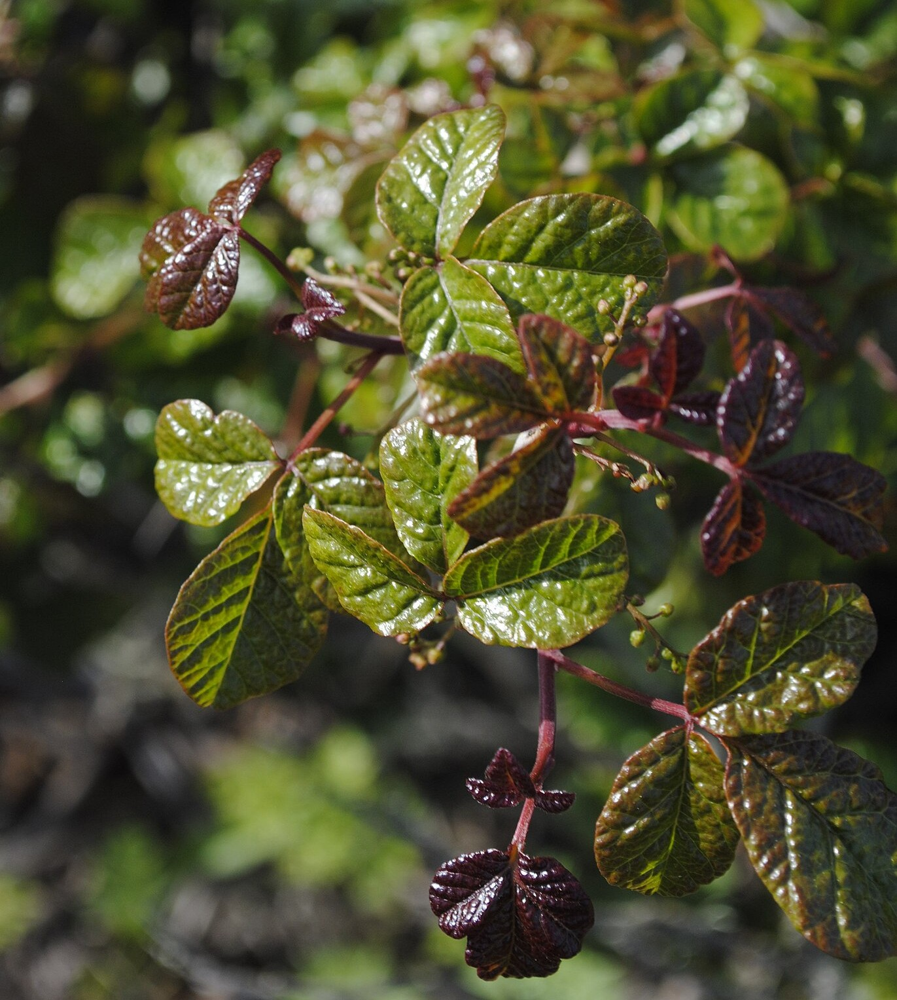
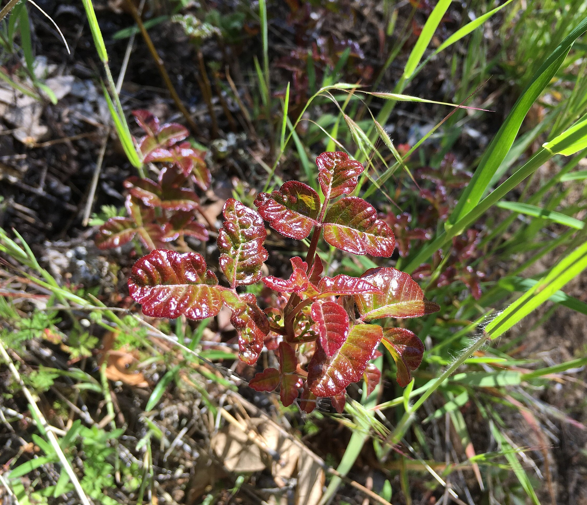
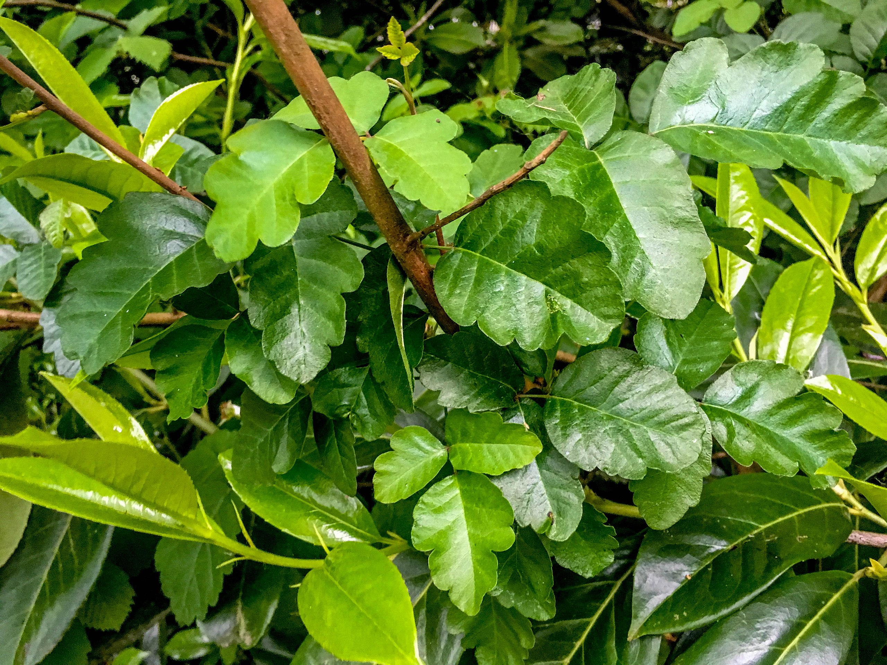

C’ítok’
Pacific Poison Oak (Toxicodendron diversilobum)
- The leaves and sap of c’ítok’ can be used as an antidote for rattlesnake bites.
- The leaves can also be used to wrap acorn bread for cooking in an earth oven.
- When burned, Native people use the ashes from c’ítok’ as pigment for tattoos.
- The leaves of c’ítok’ are divided into three leaflets, but come in various colors and shapes. They look like the leaves of oak trees but tend to be more glossy.

Pacific Poison Oak (photo by oliveoligarchy, CC BY 2.0)

Pacific Poison Oak (photo by BLM Oregon & Washington, CC BY 2.0)

❮
❯
Pacific Poison Oak (photo by Ryan McMinds, CC BY 2.0)
Homodíbe mɨɨm? (Where is it?) You can find c’ítok’ all around the Rancheria. Hoo (Soaproot) often grows near c’ítok’. DO NOT TOUCH C’ÍTOK’.
Esak’ahá daak’ábe mi c’aykɨ́ɨ? (Do you want to know more?) This webpage is part of a larger initiative to share signage highlighting plants found around the Shingle Springs Rancheria and their Nisenan names.
Webpage last updated: 2025-07-15